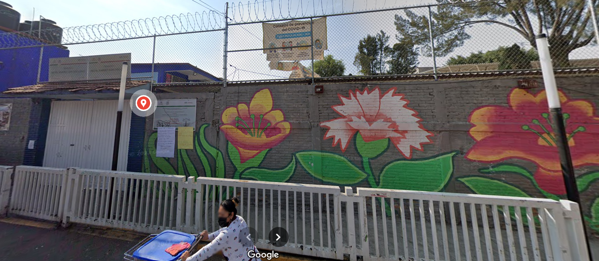

Verónica Vázquez Rojas
Hola me gusta que me llamen Vero y por medio de esta practica quiero compartirles un poco acerca de mi vida.
"Mi llegada al mundo y primeros años"
Nací el 3 de agosto de 1998 en la clina 47 del IMSS, si bien
soy
la cuarta y más joven de mis hermanos, mi nacimiento fue también altamente deseado por mis padres, especial
por mi papá. Tengo muchos buenos recuerdos de mi infancia en Oaxaca, viajabamos cada verano para ver a mis
abuelos y disfrutar de su compañía.

“La etapa de la escuela”
Amaba mi Kinder, el Vicente T. Mendoza, era una escuela enorme, con
arenero, un chapoteadero, patio de juegos, un jardín, cocina e incluso teníamos un salón de música. Recuerdo
jugar felizmente con mis amigos y sufrí por no saberme atar la agujetas. 😒
A los seis años fui pase a la primaría, en la Ramiro Sanchez tuve al mejor profesor de educación fisica del
mundo, se llamaba Raúl y siempre lo veía sonrerir. Mis calificaciones en aquella época eran relativamente
elevadas. Recuerdo también las tardes jugando en el parque con mis hermanos y nuestras bicicletas.
Sobre la secundaria, fueron tiempos oscuros Harry... es mejor omitir esta parte (aunque mi mamá seguro me
quemaria)🤣

“Adolescencia: una fase compleja ¿y luego?”
A mis 16 después de algunas circunstancias de la vida,
conocí a mi mejor amiga Mariana A. quien me presento a mis otras grandes amigas Karen A. y Viridiana Z.,
desde que nos conocimos nos entendimos bastante bien, pasamos por varios momentos como viajar, ir a
conciertos, hacer pijamadas, graduaciones, desayuno de señoras y corazones rotos. Han pasado casi 11 años
desde entonces, lamentablemente hubo recorte de personal y ahora solo somos tres, pero sabemos que tenemos
una amistad muy solida y aunque el paso del tiempo siga, nosotras siempre estaremos para apoyarnos y vernos
crecer. 💚💙💛
P.d. La foto fue de un viaje que hicimos a Queretaro.
Mis Hobbies...
- Coffee
- Tea
- Milk